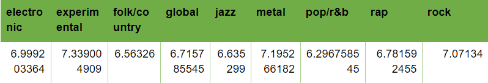

Music can be recorded and reproduced by machines. However, it has effects that science cannot fully quantify yet. Music can make a sad person feel happy or sad; it can invoke a person to feel. Because of its unique qualities, music had become an industry -a very lucrative one. People who consider to enter it are not stupid; the music career may be one of the few careers that machines will never fully conquer. Machines can produce sounds and qualities that humans can never produce; but it still requires a human to give it at least some starting directions, algorithms, and pieces to process from. However, there is really a considerable competition in this industry. Nonetheless, having an edge over the other artists could make a big difference. One of the edges that an artist can have is the genre that they will focus on. Thus here comes our question: which genre would work best for a young musician to use?
We took a dataset from Kaggle (18, 393 Pitchfork Reviews) and cleaned it. Now the dataset is ready to be processed. First, we checked the average score of each music genre per year from 2007 to 2017 (; the latest record in the dataset is 2017). Since music trends change quite fast, we did not look too far back.

Figure 1. Averages of Genres
We then got the average of each genre for their averages from the years 2007-2017. It turns out that the one who scored the highest is the experimental genre. This is not a surprise as people would opt to go for things that are fresh to them when it comes to entertainment. And the music industry is about entertainment [1] [2]. When the averages are pitted against each other per year, the experimental and global music are the ones that scored the highest. Global music is quite similar to experimental music, both are unique to the occidental world and many other parts of the world.
Perhaps you have heard of the Bohemian Rhapsody. It is a song that is considerably long, and yet it still is considered as a timeless favorite. For its time, it is considered to be a shocking song; no song before had incorporated such number of styles into one song. It is so fresh that it has remained alive throughout the years. Funny thing is, its lyrics have abstract meaning. However, the younger generation today still embraces it [3]. Another case would be the One Winged Angel -it is a track used in the game Final Fantasy VII. It is just another song used in a video game; one of many. But, it is unique for its kind; because of that, the track is considered to be quite famous among the many other songs from the Final Fantasy Franchise [4]. Bottomline is, the more unique a song is, the bigger the impression it can leave on its listeners. (The impression can be a good or a bad one; but when it comes to the entertainment industry, the fame is all that matters.) According to other studies, music that are more bouncy do better in the market than the traditional mellow or sad songs. According to the article, funky songs do not only impress people; it appeals much to them as it seemingly can lift the listeners’ moods [1]. Global music is pretty much new to countries in Europe and China. Thus, this genre can fish plenty of audience as well [5].
REFERENCES
[1] Musical trends and predictability of success in contemporary songs in and out of the top charts (2019). Royalsocietypublishing.org. Retrieved 4 March 2019, from https://royalsocietypublishing.org/doi/full/10.1098/rsos.171274#d3e1446
[2] What Does “Experimental Music” Even Mean Anymore? . (2018). The FADER. Retrieved 4 March 2019, from https://www.thefader.com/2015/05/08/system-focus-experimental-music
[3] 'Bohemian Rhapsody': The 6-minute rock single that changed the face of music. (2019). Business Insider. Retrieved 4 March 2019, from https://www.businessinsider.com/bohemian-rhapsody-queen-greatest-song-written-freddie-mercury-2018-10
[4] One-Winged Angel (theme). (2019). Final Fantasy Wiki. Retrieved 4 March 2019, from https://finalfantasy.fandom.com/wiki/One-Winged_Angel_(theme)
[5] M. Irondelle, World music, music of the world or global music?, Forum d'Avignon, 2015. [Online]. Available: http://www.forum-avignon.org/en/contribution-world-music-music-world-or-global-music-melodie-irondelle. [Accessed: 01-Feb-2019].